分歧
2021，木口木版畫、水彩、棉紙，40×40cm
因愛而結合，卻也因愛而產生分歧，對於孩子的教養方式、分工，迫使我們面臨了前所未有的爭執，自卑情感與對自我的不肯定所引發的焦慮和憤怒情緒將我們的距離越拉越遠。
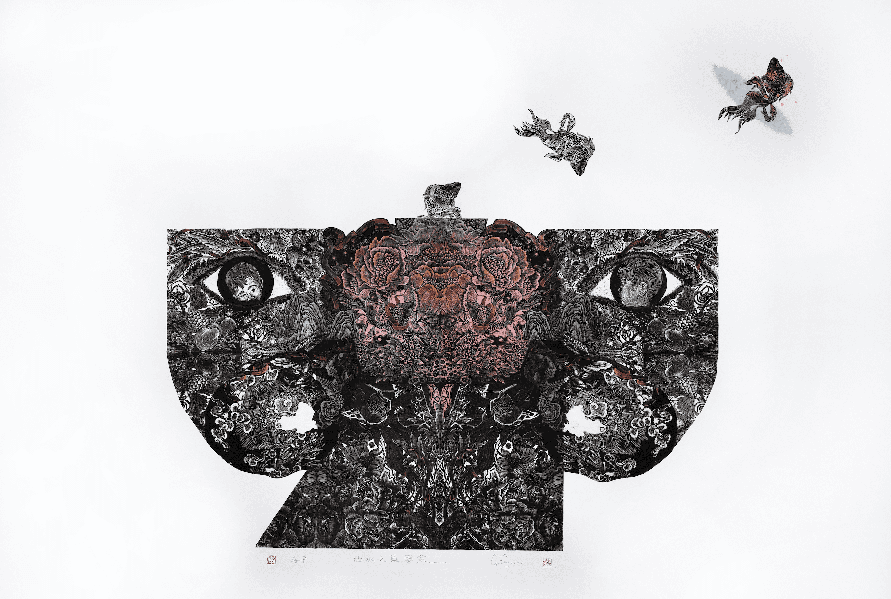
{kind=link}
出水之魚與余
2021，木口木版畫、水彩、棉紙，109.1×78.7 cm
2021年全國學生美展大專美術組版畫類佳作 在母職責任和個人價值的平衡取得中，發現自由的心境和獨處的空間，是對現況的解決之道。而魚是我，余是過往的歷史我，以魚的色彩變化代表突破內心的禁錮，轉換思維後得到人生解答。
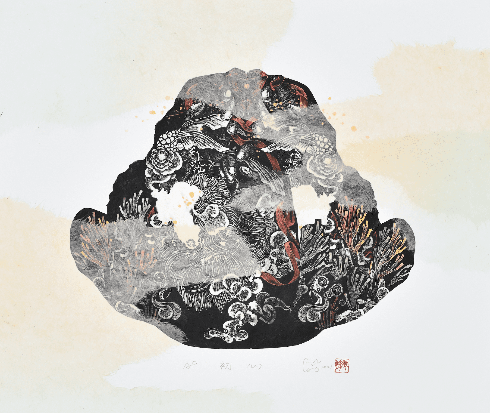
{kind=link}
初心
2021，木口木版畫、水彩、棉紙，36×37 cm
育兒沒有那麼困難，是我們自己讓它變得複雜，我們常常因為多慮而徹夜未眠，與其花心思假設各種可能，不如回到初心，找回當初最單純的快樂和信念，一切的問題就都有了答案。
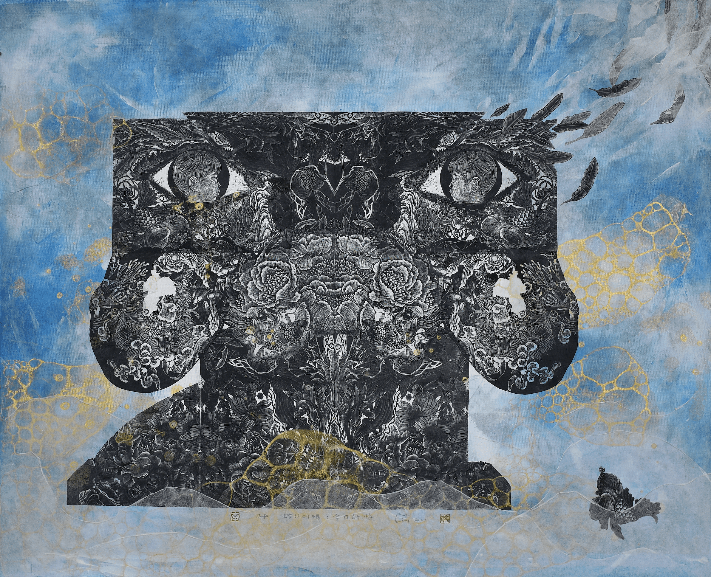
{kind=link}
昨日的恨．今日的悔
2021，木口木版畫、水彩、棉紙、畫布，65×80cm
時間有限但事情無限，繁雜枯燥的瑣事讓女性疲於奔命而容易陷入情緒失控，當積壓的情緒發洩完後，留下的則是滿身的悔恨。此件作品描繪出筆者剛發完脾氣一臉內疚、自責的臉。
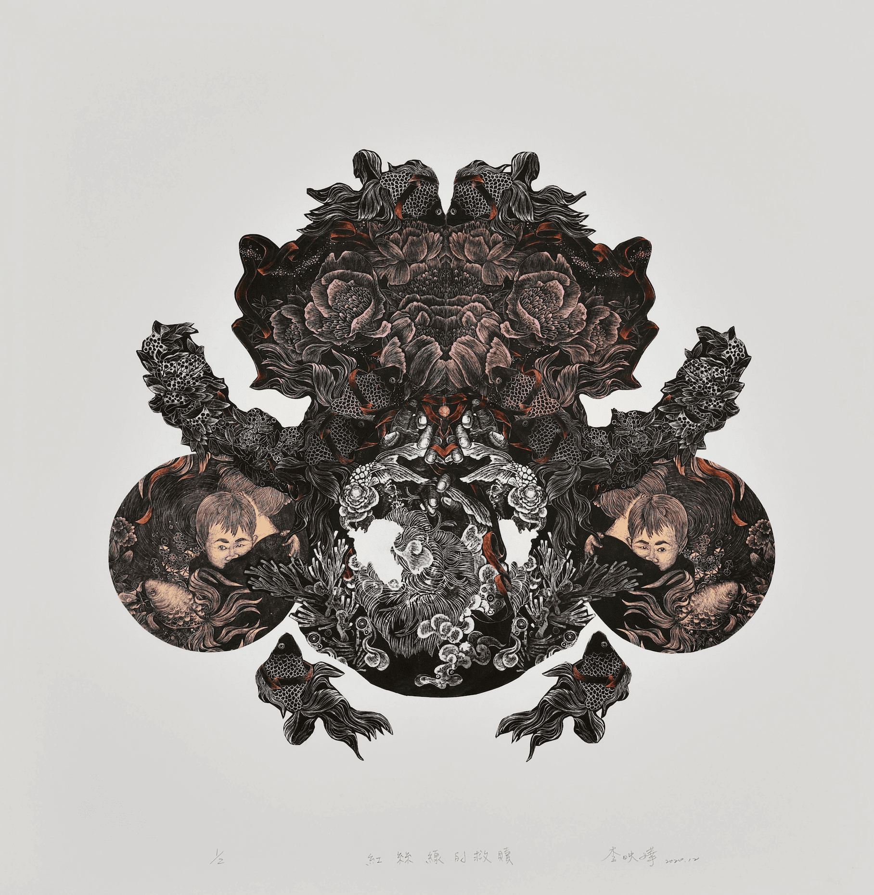
{kind=link}
紅絲線下的救贖
2021，木口木版畫、水彩、棉紙，69×74 cm
第68屆中部美術展版畫類優選
現代女性儘管女權主義抬頭，然而「有所歸」或是「有個好家庭」依舊是許多女性的夢想。對女性來說，「婚姻」是另一人生的開始，，但自我期許、社會文化的期待，種種壓力讓婚姻成了限制和束縛女性的工具，這時孩子出現，救贖了女性不安的心靈，讓他們甘於在被束縛的環境中，繼續走下去。
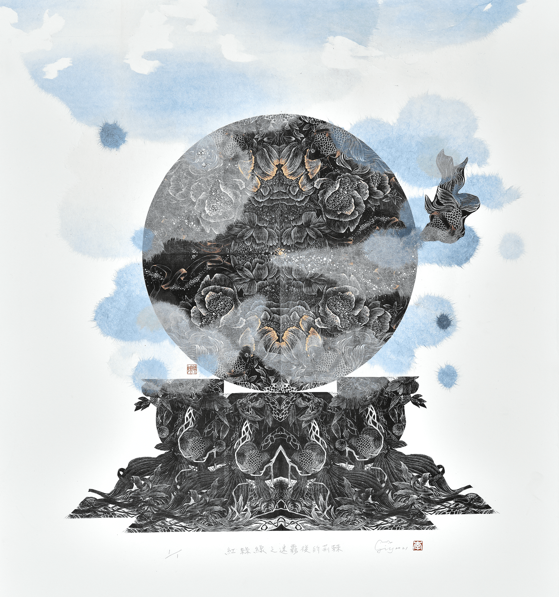
{kind=link}
紅絲線下迷霧後的荊棘
2021，木口木版畫、水彩、棉紙，74×54 cm
第二十五屆桃城美展西方媒材類入選
當蜜月期迷霧散去，女性往往發現真實的婚姻生活並不是像自己所想的如此美好，多重角色的混淆、衝突及負荷量，都讓女性不自覺在婚姻中產生了大量的自我壓迫感，對婚姻生活開始徬徨、不安、衝突、暴躁等負面情緒產生。進而讓婚姻和諧關係充滿荊棘。
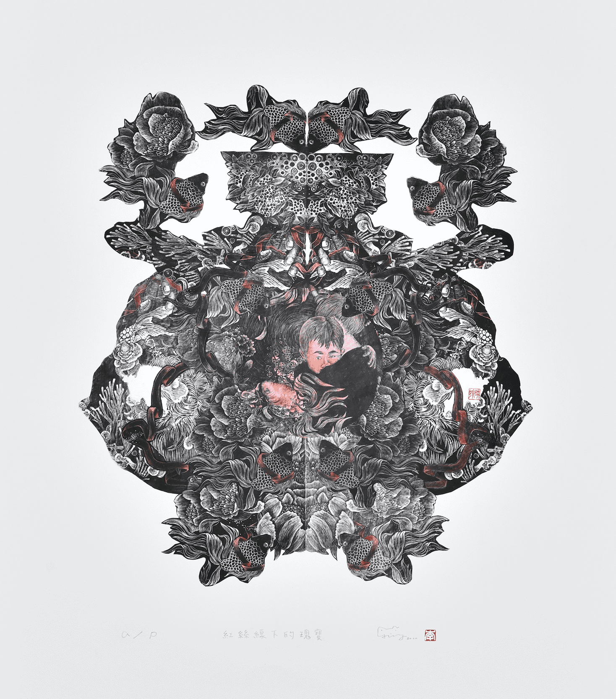
{kind=link}
紅絲線的瑰寶
2021，木口木版畫、水彩、棉紙，69×74 cm
第68屆中部美術展版畫類優選
現代女性儘管女權主義抬頭，然而「有所歸」或是「有個好家庭」依舊是許多女性的夢想。對女性來說，「婚姻」是另一人生的開始，，但自我期許、社會文化的期待，種種壓力讓婚姻成了限制和束縛女性的工具，這時孩子出現，救贖了女性不安的心靈，讓他們甘於在被束縛的環境中，繼續走下去。
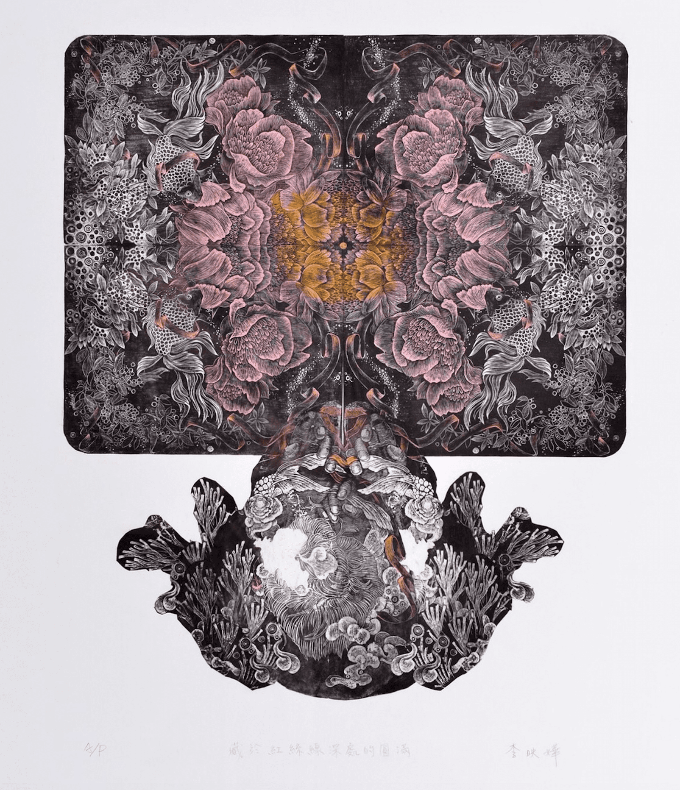
{kind=link}
隱藏在紅絲線下的圓滿
木口木版畫、水彩、棉紙，68×88 cm
2020年全國學生美展大專美術組版畫類特優
婚姻對於女性來說是充滿美好的幻想，散發著迷人的香氣。女性常常憧憬美好的婚姻生活，一朵花的蓓蕾要慢慢盛放，你不知要花多少心力和犧牲，花朵的嬌艷才會慢慢展露。伴侶間相處也是一樣，若婚姻關係穩固，有良好的環境，兩人就會不斷成長，且愈長愈美麗。
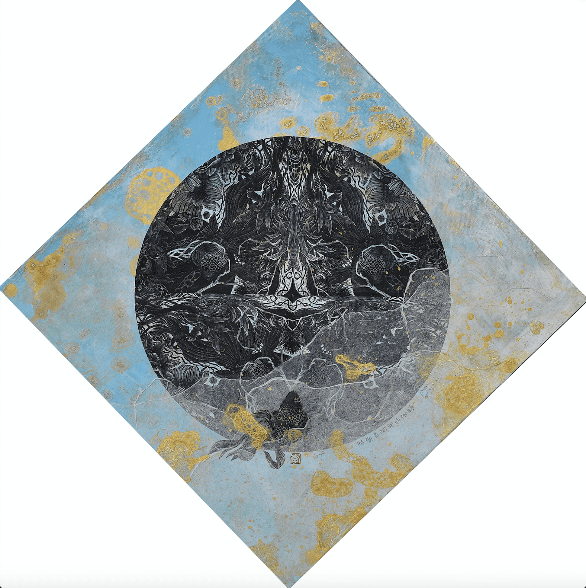
{kind=link}
時間長河裡的枷鎖
2021，木口木版畫、水彩、棉紙、畫布，40×40 cm
對於母職的無奈不單單只是外界的壓力，更多的是對於自我期許的失落。當枯燥瑣碎的事情，沒有盡頭持續著發生著。每天醒來生活如同機器人般機械式地處理預定事項，無法改變的現狀，有如溺水般，只能上下起伏不停擺動卻前進不了。
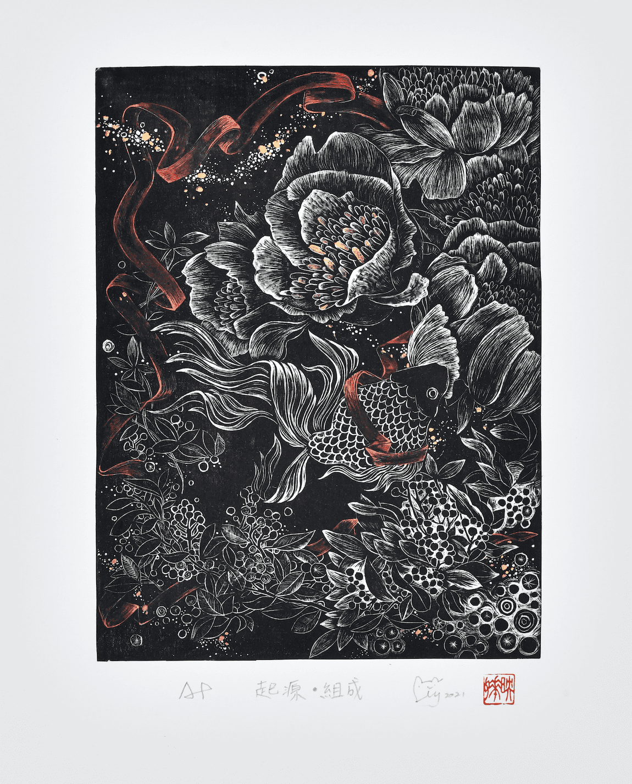
{kind=link}
起源．組成1
2021，木口木版畫、水彩，39.3×27.2cm
依循社會大眾傳統社會大眾口中的女性最終幸福，在茫茫人海中找尋另半，最終 披上婚姻的紅絲線，完成生命的圓滿，展開所謂幸福美好的婚姻生活。
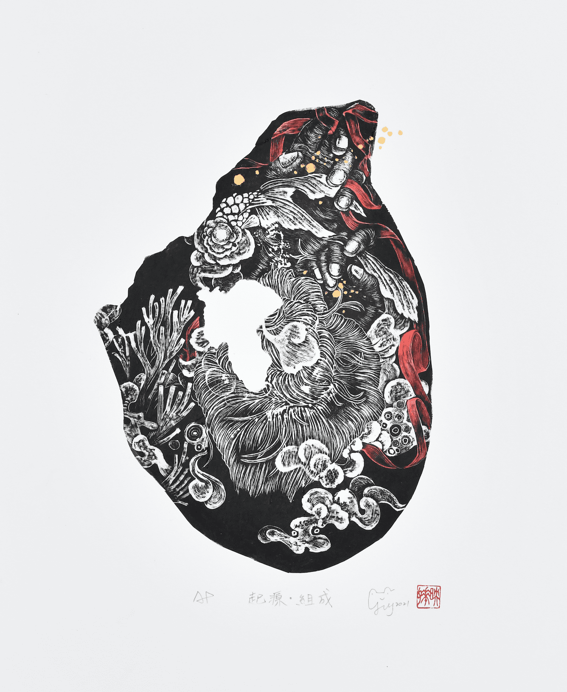
{kind=link}
起源．組成2
2021，木口木版畫、水彩，39.3×27.2cm
婚後女性用雙手編織著生活的幸福，對於手中掌握了圓滿感到幸福。依循著從小到大對於女性的洗腦式教育，一個人努力包辦所有的家事，以先生為天，將家裡打理得無懈可擊，等待著先生的歸來。
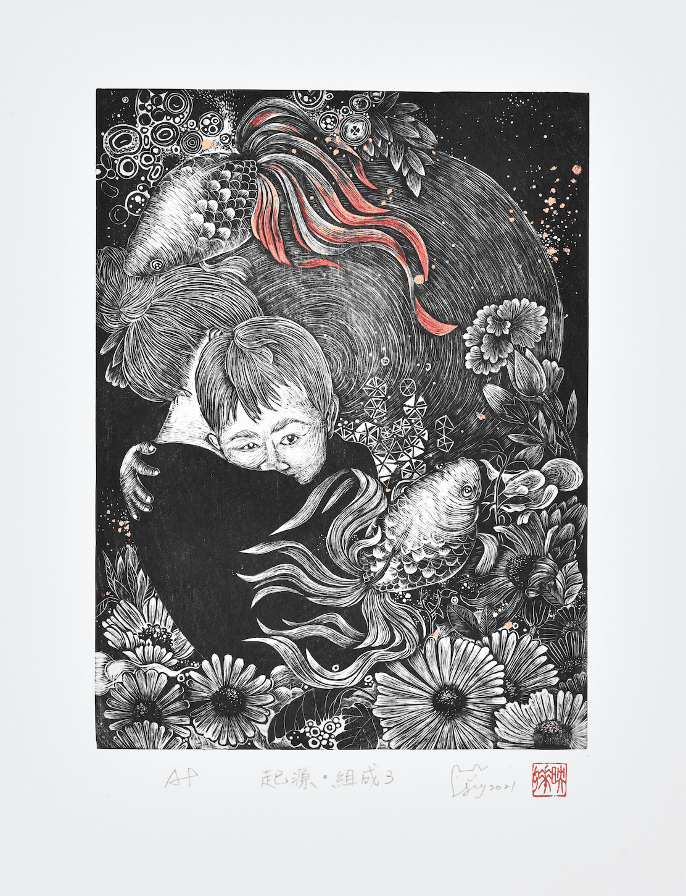
{kind=link}
起源．組成3
2021，木口木版畫、水彩，39.3×27.2cm
切都如教科書上所說的結婚生子，人生便能更加圓滿？但現實生活卻是沈重的育兒壓力，伴隨疲憊不堪的身心，面對有如旋渦般困境，只能跟著旋轉無法自拔，逐漸地失去自我。
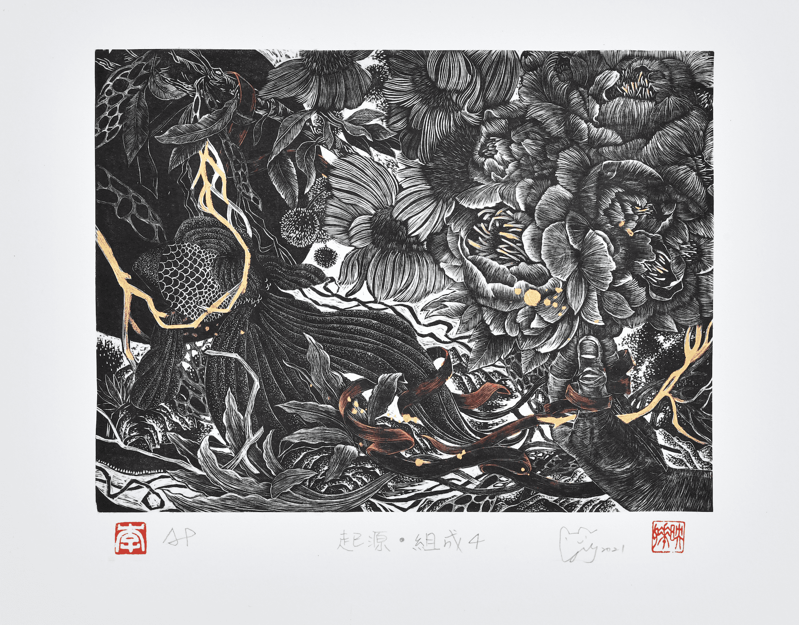
{kind=link}
起源．組成4
2021，木口木版畫、水彩，39.3×27.2cm
完美媽媽」的壓力下，看似幸福卻讓人想逃避，想要找尋自我卻又被種種責任纏繞著，動彈不得。對於改變現狀缺乏勇氣，只能在黑暗中獨自哭泣，讓自己冷靜。
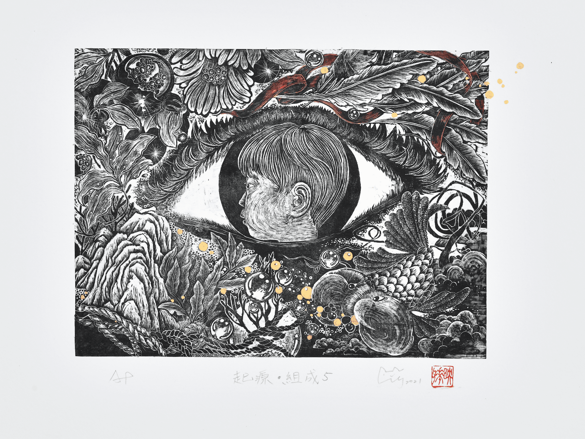
{kind=link}
起源．組成5
2021，木口木版畫、水彩，39.3×27.2cm
在傳統觀念下，結婚之後就是面臨著生子問題，看似圓滿的人生預定流程，卻是頂著傳統龐大壓力和女性無限的犧牲所換來的。為了擁有孩子，改變了工作型態及生活方式，沒有人會在乎你的感受及夢想，他們的心中、眼中都有孩子的身影。